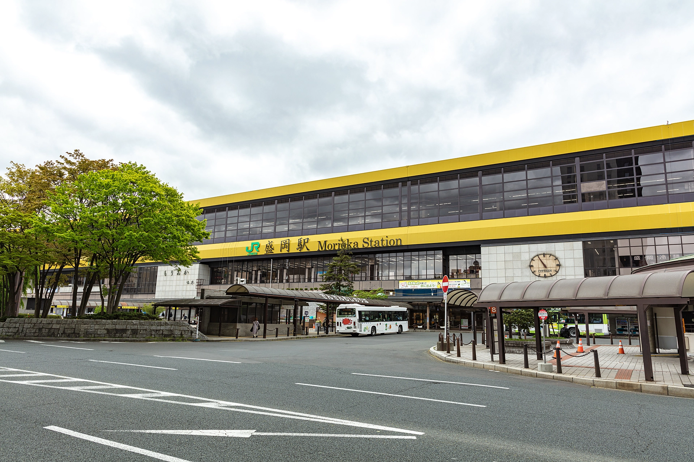

盛岡駅から徒歩約10分とアクセスの良い立地です。経験豊富なトレーナーが在籍しており、お客様の希望や体力に合わせたメニューをご提供します。大型サイズで衝撃吸収性の高いクッションフロアを採用しております。また、初心者から上級者まで目的に合わせて選べる多彩なプログラムは、全て定員制のため、ゆったりとした空間でレッスンできます。さらに、快適で充実したトレーニング環境を実現するため、近日中に最新のトレーニングマシンを導入予定です。最新設備を活用することで、筋力アップやダイエット、健康維持、体力向上など、一人ひとりの目標に合わせた、より効果的なトレーニングをサポートいたします。館内は清潔感と開放感を大切にした空間づくりを心掛けており、初めての方でも安心してご利用いただけます。運動習慣を身につけたい方から、本格的に身体を鍛えたい方まで、幅広いニーズに対応できる環境を整えております。私たちは、皆様が楽しみながら無理なく運動を続けられることを大切にしています。日々の健康づくりや理想の身体づくりに、ぜひ当クラブをご活用ください。皆様のご来館をスタッフ一同、心よりお待ちしております。
館内の風景


アクセス
お車をご利用の場合
盛岡南ICを降りて約15分
バスをご利用の場合
盛岡駅バス停からバスに乗り、大通り三丁目で降りる。そこから徒歩3分
盛岡ジム
〒020-0021 岩手県盛岡市中央通3丁目2-17 Tel: 012-3456-7890